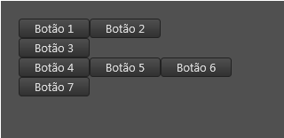

Tag flowLineBreak
Tag flowLineBreak
A tag/componente flowLineBreak é um componente invisível e serve apenas para quebrar linha em um layout dinâmico (Ver Tag flowLayout).
Observações:
- Deve ser usado junto com a Tag flowLayout.
- Se a orientação do flowLayout for "vertical", esta tag cria uma nova coluna no layout.
Herança
O flowLineBreak possui todas as características de uma tag visual.
Veja:
Características
Além das características herdadas, o flowLineBreak possui também as seguintes características:
Propriedades e atributos
| Propriedade | Tipo | Valor Padrão | Descrição |
|---|---|---|---|
| horzAlign | Enumerado: "leading" "center" "trailing" "justify" | \<não definido> | Se definido, altera as novas linhas do layout dinâmico serão alinhadas horizontalmente: "leading": Alinhados à esquerda "center": Alinhados ao centro "trailing": Alinhados à direita "justify": Alinhados de forma justificada |
| lineSpacing | Float | \<não definido> | Se definido, altera o espaçamento entre as novas linhas do layout dinâmico. |
Exemplos
Exemplo 1 - Quebra de linha
| \<?xml version="1.0" encoding="UTF-8"?> \<form name="frmFichaTeste"> \<flowLayout left="20" top="20" width="250" autoHeight="true"> \<button text="Botão 1"/> \<button text="Botão 2"/> \<flowLineBreak/> \<button text="Botão 3"/> \<flowLineBreak/> \<button text="Botão 4"/> \<button text="Botão 5"/> \<button text="Botão 6"/> \<button text="Botão 7"/> \</flowLayout> \</form> |
|---|

Created with the Personal Edition of HelpNDoc: Make the switch to CHM with HelpNDoc's hassle-free WinHelp HLP to CHM conversion tool